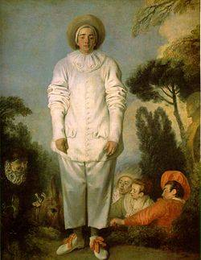
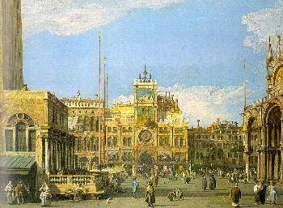
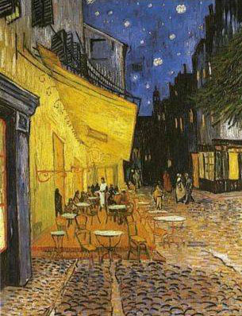

Billets d'humeur
Textes d'opinions humoristiques souvent satiriques
Un petit musée virtuel.

Jan van Eyck :
L'homme au chapeau bleu (1430)

Rogier van der Weyden :
Portrait de femme (1455)

Jérôme Bosch :
Portement de croix (1508)

Breughel l'Ancien :
Tour de Babel (1563)

Nicolas Poussin :
L'enlèvement des Sabines (1637)

Antoine Watteau :
Pierrot (1719)

Canaletto :
Piazza San Marco (1730)
Jacques-Louis David :
Les sabines (1799)
Ingres :
Œdipe et le sphinx (1808)

Jacques-Louis David :
Femmes d’Alger (1834)

Vincent Van Gogh :
Terrasse
du café le soir (1888)

Gustav Klimt :
Le baiser (1907)
Piet Mondrian :
Pier and ocean
(1915)

Wassily Kandinsky :
Composition VIII (1923)
Joan Miro :
Le Port (1945)

Salvador Dali :
Nature
morte vivante (1956)
Francis Bacon :
Autoportrait (1971)

Lucian Freud :
Autoportrait (1985)
Jan Fabre :
Leda ou l'Ange de la mort (2005)